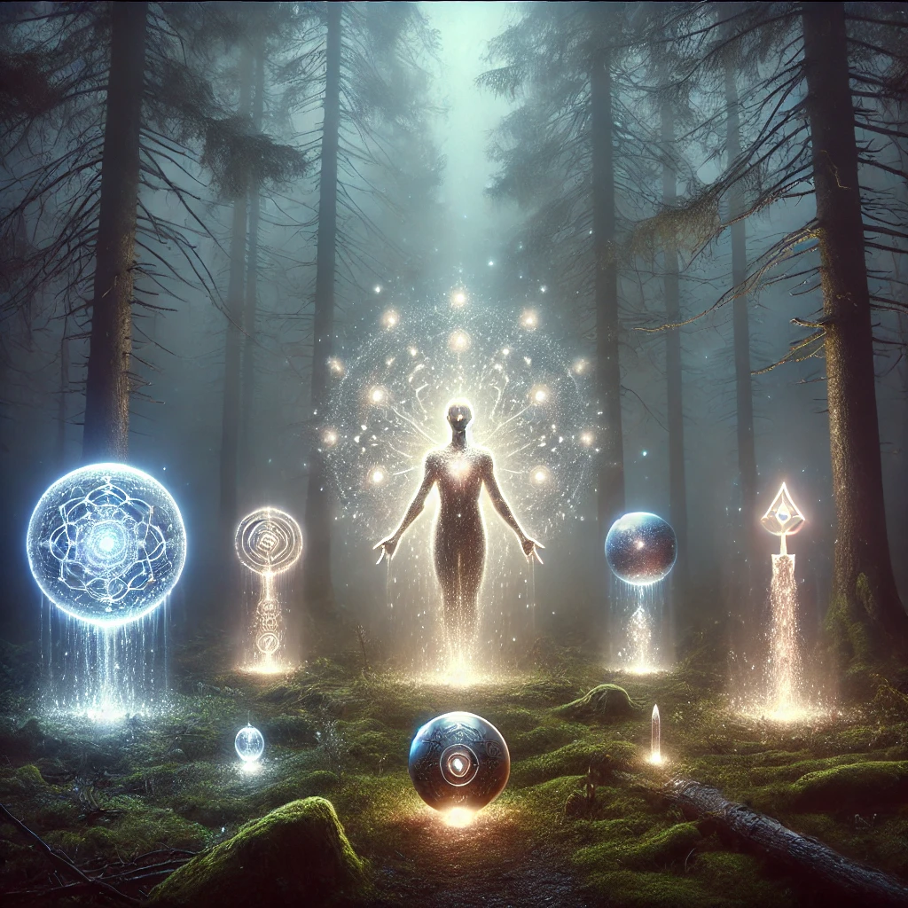

As you step further into the misty forest, the air shifts. The trees seem to breathe, their branches moving as if alive. In the distance, a faint light glimmers. Drawn to it, you find yourself in a small clearing where a radiant being awaits.
The being’s form is fluid and shimmering, as though made of liquid light. Its presence hums with energy, and its eyes, like twin stars, meet yours with an intensity that stops you in your tracks. A voice, calm and resonant, echoes in your mind:
“You have reached the threshold. Beyond this, the path is yours to forge. But to proceed, you must choose your tool for the journey.”
The being gestures, and three objects materialize before you: a glowing vial, a ceremonial drum, and a crystalline dagger. Each object pulses with energy, carrying its own distinct aura.

Which tool will you choose?